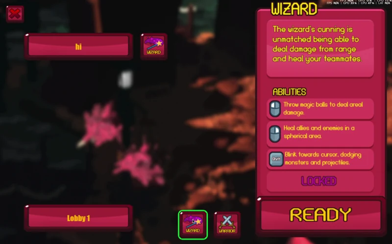
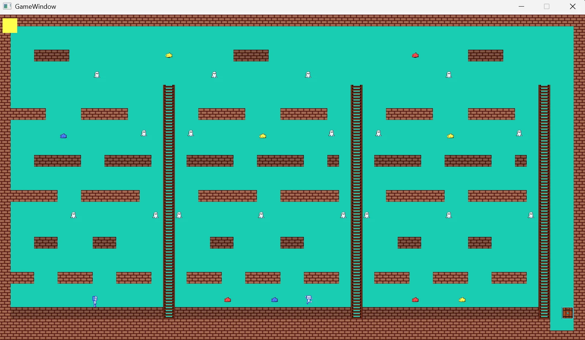

ENGINEERING / 01TCP / UDP を用いた
TCP / UDP を用いた
独自ネットワーク同期
既存のゲームエンジンに頼らず、C++によるソケット通信を実装。サーバーとクライアント間のリアルタイム同期、最大4人のロビーシステムを構築しました。
SOCKET PROGRAMMINGTCP / UDPMULTIPLAYER
SERVER / SOCKET INITIALIZATION
C++とDirectXを用いたゲーム開発を通じて、
「コードがどう動くか」という根幹を探求しています。

HOME HEARTH — CUSTOM ENGINE
FEATURED PROJECT
完全自作のゲームエンジンを用いてゼロから構築した、ネットワーク同期型の3Dマルチプレイヤー・アクションゲーム。
通信処理（TCP / UDP）から3Dレンダリング、物理演算まで、ゲームエンジンの根幹となるシステムを独自に設計・実装。最大4人で遊べる協力型の防衛アクションを制作しました。
RECOGNITION
DirectX オリジナルゲーム学内コンテスト
技術力賞HAL EVENT WEEK
独創力賞ENGINEERING HIGHLIGHTS
ゲームとしての体験だけでなく、その実現を支えるシステム設計と実装を紹介します。
既存のゲームエンジンに頼らず、C++によるソケット通信を実装。サーバーとクライアント間のリアルタイム同期、最大4人のロビーシステムを構築しました。
IRenderPass インターフェースを用いた拡張性のあるレンダリング設計。Shadow、DoF、Bloom、パーティクルなど複数の描画パスを統合し、マルチスレッド環境での処理を考慮しました。
フレームレートの変動を考慮し、elapsed_time に基づく更新処理を実装。速度ベクトルや摩擦（減衰）を用いて、滑らかな移動表現を目指しました。
GAMEPLAY & DESIGN

迫りくる敵から拠点を守るウェーブ制防衛システム。リソースを使った防具・罠の配置と、プレイヤー自身の攻撃を組み合わせます。

IPアドレスとポートを指定する接続画面とロビーシステム。役割を分担しながら拠点を守る協力プレイの基盤を作りました。

ウィザードには範囲魔法、味方の回復、瞬間移動（Blink）などの固有アビリティを実装。クラス間の連携を意識した設計です。
IN-GAME & DEVELOPMENT
3Dツールからのモデルエクスポート、マテリアル・シェーディング・ライティングの管理を含む、オリジナルのアセットパイプラインを構築しました。
GAMEPLAY DEMONSTRATION
自作のC++ / DirectXエンジンで制作した3Dマルチプレイヤー・アクションのデモリールです。ゲーム画面と開発成果をご覧いただけます。
2D GAME PROJECT
色の効果を活用してステージを攻略する、C++ / DirectX製の2Dプラットフォームゲーム。

GAME OVERVIEW
プレイヤーが色の異なる弾を使い、ステージ内のオブジェクトの性質を変化させながら進む2Dアクションゲーム。赤・青・黄の効果や、透明ブロックを可視化する仕組みを組み合わせています。
主な操作：A / D（移動）、W / S（はしご）、Space（ジャンプ）、1 / 2 / 3（赤・青・黄の選択）、左クリック（発射）
射出したペイント弾が着弾すると、塗装可能なタイルの状態を変更。赤は反発、青は滑走、黄は壁面での動きに変化を与えます。
32px単位のマップデータをもとに足場・はしご・敵などを配置。矩形当たり判定と速度更新で移動を制御します。
アニメーション、カラー切り替え、敵との戦闘、フェード演出、タイトル／ゲーム／リザルトのシーン遷移を実装しました。


GAMEPLAY DEMONSTRATION
ゲームの操作やステージの様子を動画で確認できます。
※ 実行ファイル（Windowsビルド）とソースコードは、応募先の提出方法に合わせて別途提出します。Webサイトには含まれません。 実装の詳細を見る ↗
UNITY 6 · C# / SHOOT 'EM UP
宇宙船を操作し、迫り来る障害物や敵に立ち向かう2Dシューティングゲーム。エネルギー管理やウェーブ進行、ボス戦などを実装しています。

GAME OVERVIEW
プレイヤーは小型宇宙船を操縦し、アステロイドや敵を回避・攻撃しながら先へ進みます。HPとエネルギーを管理し、ステージの終盤には大型の敵が待ち受けます。
プレイヤーの体力・エネルギーを表示。Unity Inspectorには移動速度、ブースト、エネルギー回復などの設定項目が確認できます。
敵や障害物を段階的に出現させるウェーブ構成。複数のオブジェクトプールを使用する管理構成をUnity Editor上で確認できます。
メニュー画面、ポーズ状態、ステージ完了画面までを用意。ゲーム進行を支えるUIとシーン構成を紹介します。
※ 実行ファイル・Unityプロジェクト・C#ソースコードは応募先への提出時に別途共有します。この公開サイトには含めていません。 Space Shooterの詳細ページ ↗
ABOUT ME
「コードがどう動くか」という
根幹の探求。
DirectXやC++を用いた開発経験を活かし、ハードウェアレベルでコードがどのように処理されるのかを意識しながら実装を行っています。
現在のUnityやC#の知識を土台に、今後はUnreal Engineの学習にも取り組み、ゲームエンジンのアーキテクチャへの理解をさらに深めたいと考えています。
NEXT TO LEARN → UNREAL ENGINE